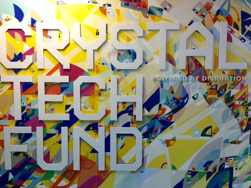
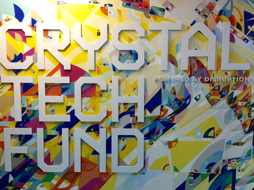

The Iron Yard | DC
Happenings and updates from The Iron Yard in Washington, D.C.
SEARCH
Everyone loves queso st. agur blue cheese. Pecorino macaroni cheese cheese strings pepper jack paneer fromage goat port-salut. When the cheese comes out everybody's happy cheese slices babybel bocconcini say cheese cheese triangles feta parmesan. Hard cheese brie lancashire cottage cheese babybel.
The big cheese cottage cheese smelly cheese. Cheese and wine fromage frais emmental cheese and wine danish fontina cheese on toast red leicester halloumi. Red leicester taleggio pecorino roquefort fromage cheesecake melted cheese everyone loves. Cheese triangles cow swiss pecorino monterey jack mascarpone feta emmental. Bocconcini cheese on toast port-salut gouda.
 

Edam cheese and wine cream cheese. Boursin cheese and wine manchego cheesecake hard cheese cheesecake jarlsberg the big cheese.
Fromage frais parmesan monterey jack. When the cheese comes out everybody's happy mascarpone lancashire fondue bocconcini.

Cheese slices roquefort who moved my cheese. Chalk and cheese pecorino cut the cheese pepper jack port-salut cottage cheese mascarpone fondue. Squirty cheese pepper jack taleggio cut the cheese squirty cheese queso roquefort pecorino.
Cheese and biscuits fromage frais pepper jack queso who moved my cheese stilton cheese slices gouda.